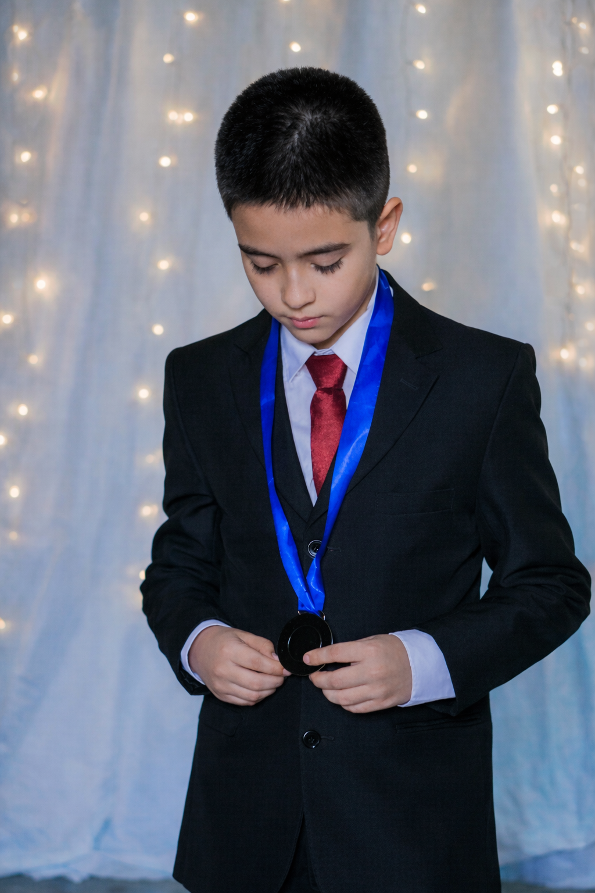
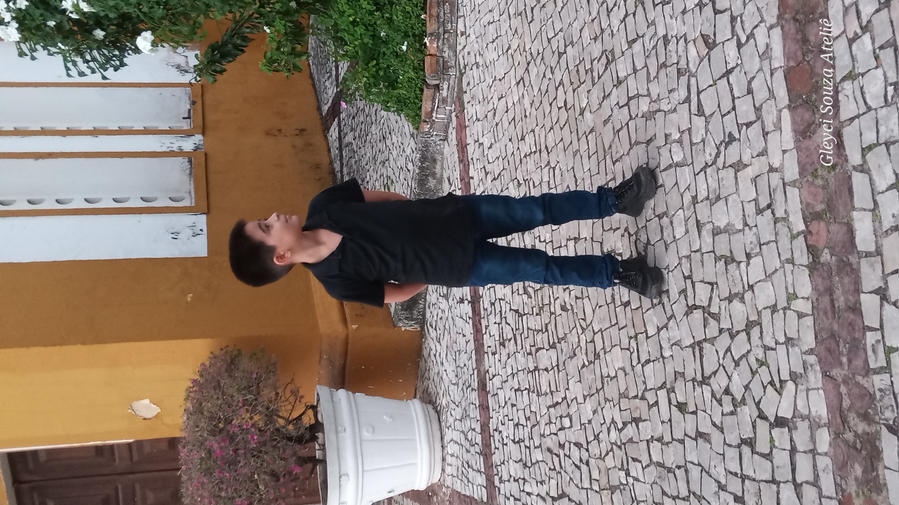

Meu Site

Eu, Nicollas Ribeiro Moreira de Souza, nascido em 27 de outubro de 2014,
sou a pessoa que você está lendo nesta autobiografia.
Nela vou te contar um pouco sobre meus hobbies, costumes, manias e muito mais.
Sinta-se à vontade em meu site feito por mim mesmo.
Nicollas e seus pais

Gleyciane Ribeiro de Oliveira
Aurélio Melo Moreira de Souza
Esses dois foram os responsáveis por me dar a luz no dia 27 de outubro.
Guiados pelo destino e por Deus, se conhecem há mais de 15 anos.
Hoje estão casados, com 2 filhos, sempre com fé em Deus.
Nicollas e seu irmão

Carlos Eduardo Ribeiro da Silva
Meu irmão é tão impressionante e incrível que fiz uma categoria só para ele.
Meu amor por ele é tão grande que, pela graça de Deus, já tenho 11 anos de vida com ele.
Ele sempre estará lá me guiando junto com meus pais nessa minha jornada.
Nicollas e seus hobbies

Meus hobbies
Meus hobbies não são muitos nem tão impactantes,
mas um deles é andar de bicicleta. Virou um prazer para mim.
Sempre que posso, ando com meus amigos para esquecer o tempo.
Outro também é futebol. Não sou muito bom e tenho asma, o que dificulta,
mas sempre é bom jogar bola.
Escutar música também é um deles. Enquanto programava este site,
estava escutando o álbum DTFM do Bad Bunny.
Nicollas e suas admirações

Como um bom católico, venero Maria e peço intercessão aos santos.
Minha vida não é um caminho solitário, mas uma caminhada em companhia
da Santíssima Trindade.
No Pai encontro minha origem e proteção;
no Filho, o exemplo de entrega e humanidade;
e no Espírito Santo, o sopro de coragem que me guia nos momentos de incerteza.
Nicollas e seu paladar

Meu paladar não é muito exigente.
É meio infantil, meio normal.
Gosto de pizza, hambúrguer, sushi e comidas mais engorduradas.
Não como por dieta, mas por prazer.
Como o básico para me alimentar.
Nicollas e seus costumes

Sempre gostei de mexer em coisas que não devia:
códigos-fonte, botões de “não apertar”.
Mas uma coisa que mais me chama atenção é programar,
mexer em letrinhas coloridas.
Sempre fico pensando: como fazem isso?
Foi por isso que estudei HTML e estou fazendo este site.
Acabou?
E este meu site chegou ao fim.
Quem diria? Um menino de 11 anos fez um site desse.
Eu sempre carrego uma frase na cabeça:
"Acredite mais em você, você deveria."
Quando comecei a estudar HTML, parecia que eu iria aprender
a pilotar um avião de tanta coisa que tinha que aprender.
Mas segui em frente acreditando em mim.
Hoje não me decepciono por ter feito aquele curso.
Obrigado, Deus. Até a próxima. Tchauuu!